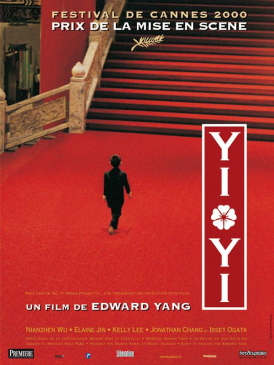
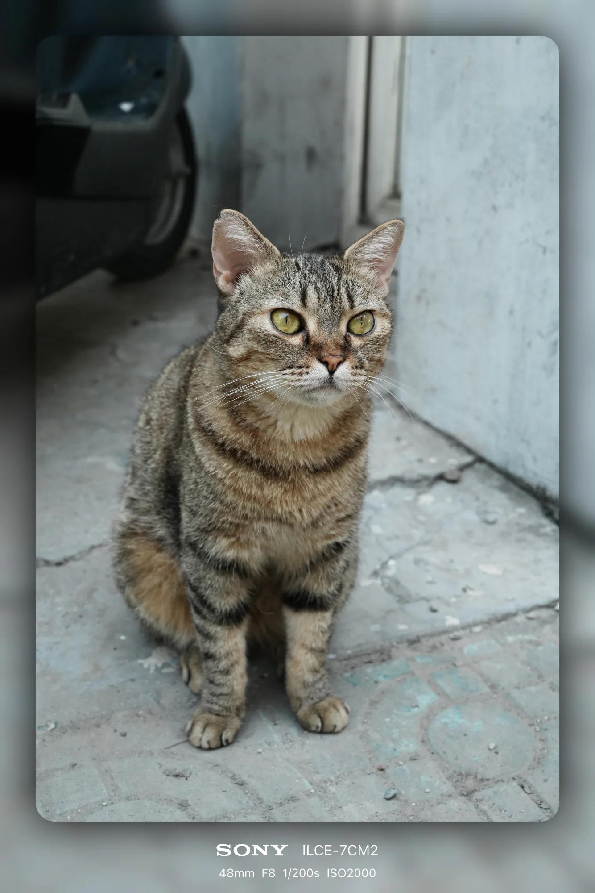
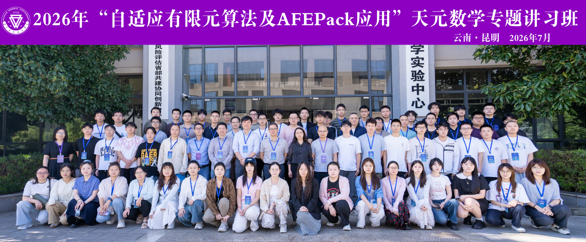

Jan 2027 — Dec 2027
Visiting Student
Inria Paris · Paris, France
Host: Zhaonan Dong
I am a master’s student in Mathematical Sciences at the University of Electronic Science and Technology of China.
My interests sit at the intersection of numerical analysis, partial differential equations, and scientific computing. I am especially curious about discontinuous Galerkin methods, finite element analysis, and computational fluid dynamics.
Jan 2027 — Dec 2027
Inria Paris · Paris, France
Host: Zhaonan Dong
Sep 2025 — Present
University of Electronic Science and Technology of China
Advisor: Prof. Hua Shen ↗
Sep 2021 — Jun 2025
Yangzhou University
Began my M.Sc. studies at UESTC, focusing on numerical analysis and scientific computing.
AcademicCompleted my B.Sc. studies at Yangzhou University.
MilestoneAdded and reorganized a collection of mathematics notes.
WritingReceived Finalist recognition in the Mathematical Contest in Modeling.
AwardUntil then, this page can gracefully show thesis work, technical notes, posters, and invited talks without pretending they are publications.
I am interested in how discrete models preserve the structure, stability, and physical meaning of continuous systems.
Formulae are rendered by MathJax, so future blog posts can use familiar LaTeX syntax for inline and display mathematics.
High-order, locally conservative discretizations for transport, diffusion, and wave problems on complex meshes.
Approximation theory and practical methods that connect rigorous estimates with reliable scientific computation.
Structure-aware simulation of multiscale flow phenomena and their coupled partial differential equations.
“A useful mathematical explanation should make the next question easier to ask.”
Course pages prioritize weekly structure, clear notation, accessible files, and short summaries of what students should be able to do after each topic.
Solutions and announcements remain visibly separated from the permanent notes, making the page easy to reuse in a later term.
Course notes, seminar records, and reflections from summer schools and workshops.
Downloadable PDF notes, organized by course, term, and topic.
Graduate course · 53 pages
Graduate course · 12 pages
Undergraduate course · 30 pages
Undergraduate course · 50 pages
Undergraduate course · 49 pages
Undergraduate course · 48 pages
Undergraduate course · 70 pages
Undergraduate course · 33 pages
Undergraduate course · 128 pages
Exercises · 23 pages · Partial notes
Reading plans, schedules, references, and selected notes from seminars I organize or attend.
A place for themes, weekly speakers, reading lists, and shared materials.
Selected talks, personal notes, references, and questions to revisit.
Longer summaries live on their own pages, separate from the main academic homepage.
Mathematical writing with LaTeX support, alongside occasional notes on study, travel, and daily life.
A visual introduction to the design idea behind discontinuous Galerkin methods, beginning with conservation on one cell.
Notes from the first weeks of graduate study: a new campus, new questions, and the habit of keeping a mathematical notebook.
Read the draftI started running in October 2025 and now average about 100 km each month.
Main and backup racket configurations. Blade and rubber choices can be added later.
I swim breaststroke.
During my master’s studies, I play football with Prof. Yiqi Gu ↗ and his group about two or three times each month.

2000 · Edward Yang
Personal note to be added.

2014 · Christopher Nolan
Personal note to be added.
2007 · Jiang Wen
Personal note to be added.
2017 · Denis Villeneuve
Personal note to be added.
2016 · Damien Chazelle
Personal note to be added.
2001 · Ron Howard
Personal note to be added.
2014 · James Marsh
Personal note to be added.
1994 · Wong Kar-wai
Personal note to be added.
2021 · Nobuhiro Doi
Personal note to be added.

2010 · Christopher Nolan
Personal note to be added.
I shoot both digital and film, moving between the immediacy of a digital camera and the slower rhythm of film. My current kit includes a Sony A7C II, a Canon AE-1 film camera, and a DJI Osmo Action 4. I am especially drawn to landscapes and animals.

Routes, food, transport, and practical notes.
A longer narrative with photographs and a map route.
A self-contained course homepage for announcements, weekly notes, exercises, and office-hour information.
We study finite difference, finite element, and discontinuous Galerkin viewpoints through model elliptic and evolutionary equations.
2026年“自适应有限元算法及AFEPack应用”天元数学专题讲习班

I attended this Tianyuan Mathematics workshop in Kunming. The programme begins with a sustained course on adaptive finite element methods and the foundations of AFEPack, followed by a series of research lectures on current applications.
Lectures run from 08:30–11:30 and 14:00–17:00 unless noted otherwise.
Yunshang Seasons Hotel, Kunming
Core theory and software foundations, with space for a short summary of every day.
Guanghui Hu ↗ University of Macau
Training Building II–204
Summary to be added.
Summary to be added.
Summary to be added.
Summary to be added.
Summary to be added.
Summary to be added.
Summary to be added.
Summary to be added.
Research talks connecting AFEPack with current problems in scientific computing.
Heyu Wang ↗ Zhejiang University
Training Building II–204
Yanli Wang ↗ Beijing Computational Science Research Center
Training Building II–204
Yana Di ↗ Beijing Normal–Hong Kong Baptist University
Training Building II–204
Jingfeng Wang ↗ University of Macau
Training Building II–204
Hongfei Zhan ↗ National University of Singapore
Training Building II–202
Yang Kuang ↗ Guangdong University of Technology
Training Building II–202